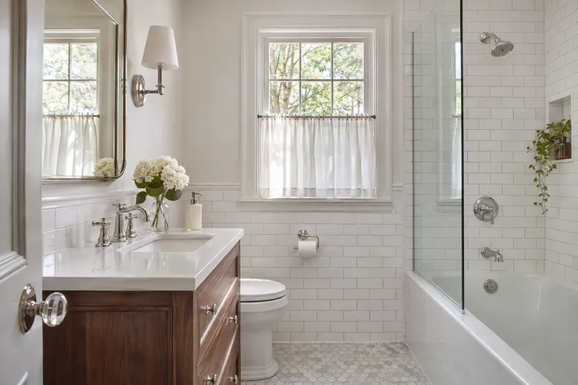
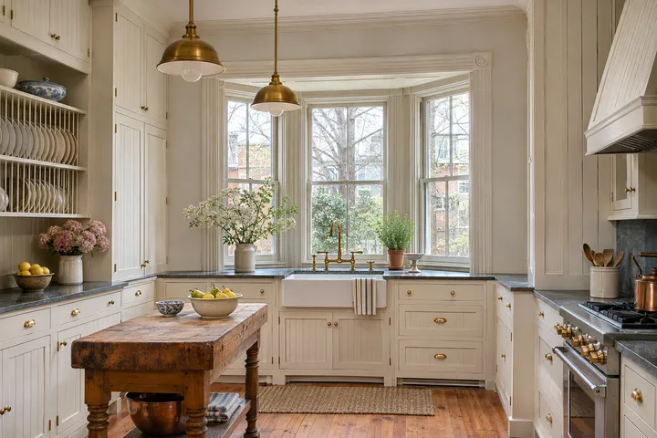

Home remodeling in Kensington and Garrett Park, MD.
Blue Hammer Remodeling is based in Olney and plans bathroom remodeling, kitchens and finished basements for homes in Kensington 20895 and Garrett Park 20896. A project can be one bathroom or several rooms, and it starts with a measured plan of what is there now.


What each room allows in Kensington and Garrett Park
How far each room can go, starting with the one in daily use.
Bathroom remodeling
If the fixtures stay where they are, the room is rebuilt around them with new tile, a new vanity and better ventilation. If the tub is rarely used, a shower with a glass panel opens up the floor. If the house has a half bath with a closet behind it, the two can sometimes become a full bath.
Kitchen remodeling
If the kitchen is narrow, a peninsula gives seating and counter without the clearance an island needs on every side. If it is closed off from the dining room, a wider opening shares the light and keeps some wall for cabinets. If counter space is short, appliances are sized to the room.
Finished basement
If the stairs come down in the middle, they divide the level into two rooms, and the plan works with that. If the furnace and water heater sit in the open, a mechanical room is framed around them with the access they need. If the laundry is downstairs, it gets its own finished corner.
We also take on small repairs around the house. Ask about a small repair
How permits differ between Kensington and Garrett Park
Each town has its own office, and the County permit still applies.
County and WSSC
Montgomery County’s Department of Permitting Services issues the County building permit for both towns. Plumbing and gas go through WSSC Water.
Kensington
The County’s list of municipalities places Kensington among the towns whose approval is required before the County application. The Town’s resident FAQ sends permit questions to Town Hall staff.
Garrett Park
The same County list requires both County and Town approval here. The Town of Garrett Park asks that its building permit be applied for before the County’s, and notes that the County requires a permit for any alteration to a structure.
Historic properties
Status is checked property by property on Montgomery Planning’s map. The County’s historic permit applies to exterior changes and is not required for interior work.
Budget factors by scope
Your price comes from your drawings and selections and from the conditions in your house, set out in a written scope. The steps are on the process page.
| Scope | What drives the cost |
|---|---|
| Bathroom, fixtures in place | Tile, vanity and fixtures, the fan and its duct, and what is found behind the old walls. |
| Bathroom, fixtures moved | New drain and supply runs, floor framing if a drain crosses it, plus everything in the row above. |
| Half bath made into a full bath | The space taken from the next room, a new shower drain and its waterproofing. |
| Kitchen in a compact room | Cabinets built to fit the walls, the counter material, the appliances, and any opening made to the next room. |
| Finished basement | Moisture work, the rooms framed, a bathroom if one is added, and heating and cooling. |
Starting with one room
Send the address and say whether the house is in Kensington, Garrett Park or outside both town limits. Tell us which room comes first and how many bathrooms the house has. The consultation covers priorities, a budget range and timing.
Schedule a ConsultationKensington and Garrett Park remodeling questions
See all service areasHow is the house assessed before a design is drawn?
We measure the rooms and trace where the drains, water lines and wiring run, since they limit how far fixtures can move. We check how the bathroom is vented and look at the electrical panel. Anything structural is settled by an on-site assessment.
What if the bathroom being remodeled is the only full bath?
Then the plan has to cover where the household showers while the room is out of use. That is discussed before the scope is written, along with the order of the work. If the house has a second bathroom, the plan sets which one stays in use while the other is being remodeled.
Island or peninsula in a small kitchen?
An island needs walking room on all four sides, and a peninsula needs it on three. In a narrow room that difference decides the question. A measured drawing with the appliance doors open shows which one fits.
What is checked before a basement is finished?
Moisture on the walls and floor, the ceiling height under ducts and beams, and where the furnace, water heater and electrical panel sit. The stair position matters too, because it sets how the rooms divide. Each of these is looked at on site before a layout is drawn.
What should we have ready for the consultation?
The address and the town, photos of the room, and a list of what is not working. Note how many bathrooms the house has and which ones stay in use. A budget range and the timing you have in mind help us shape the scope.
Does a remodel in Kensington or Garrett Park need a town permit?
Each town decides that for the work in question. The County lists Kensington among the towns whose approval comes before the County application, and Garrett Park among those where both approvals are required. Ask the town office about your project. An address outside both town limits follows the County process.
Schedule a consultation
Tell us the room, your timing and your ZIP code. We review each request and reply about the next step.
- Start with your priorities, budget range and timing
- Talk through scope, design direction and permits
- Confirm your home is inside our service area